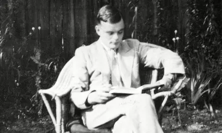

Grandes Personajes de la Computación
Alan Turing
Alan Mathison Turing nació el 23 de junio de 1912 en el barrio de Paddington, Londres. Su familia era de clase media alta. Fue el segundo hijo de Julius y Sara, que permanecieron en la India durante varios años, por lo que pasó la infancia con su hermano mayor John. A los 26 años Turing comenzó a trabajar para el servicio oficial británico de cifrado. Obtuvo el doctorado por la Universidad de Princeton, especializándose en criptología.
Imágenes relacionadas:
